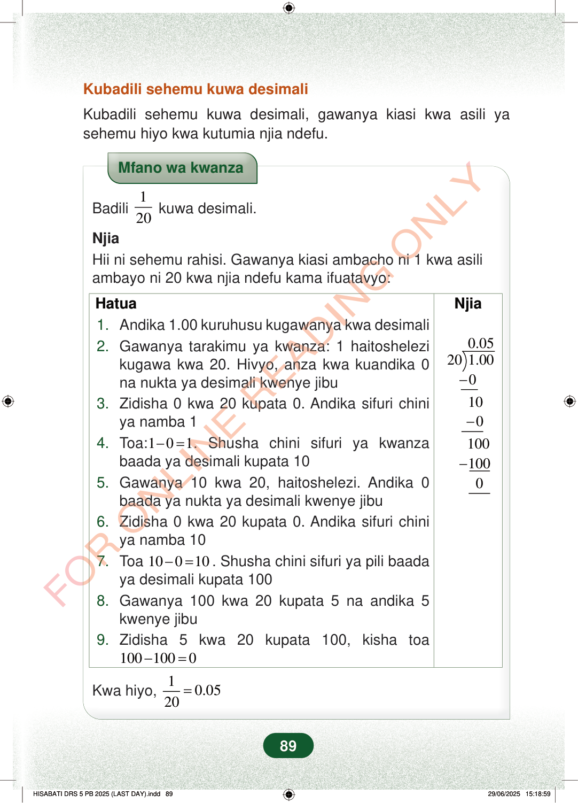

Kubadili sehemu kuwa desimaliKubadili sehemu kuwa desimali, gawanya kiasi kwa asili yasehemu hiyo kwa kutumia njia ndefu.Mfano wa kwanzaBadili120kuwa desimali.NjiaHii ni sehemu rahisi. Gawanya kiasi ambacho ni 1 kwa asiliambayo ni 20 kwa njia ndefu kama ifuatavyo:HatuaNjia−−−0.05201.00010010010001.Andika 1.00 kuruhusu kugawanya kwa desimali2.Gawanya tarakimu ya kwanza: 1 haitoshelezikugawa kwa 20. Hivyo, anza kwa kuandika 0na nukta ya desimali kwenye jibu3.Zidisha 0 kwa 20 kupata 0. Andika sifuri chiniya namba 14.Toa:101−=. Shusha chini sifuri ya kwanzabaada ya desimali kupata 105.Gawanya 10 kwa 20, haitoshelezi. Andika 0baada ya nukta ya desimali kwenye jibu6.Zidisha 0 kwa 20 kupata 0. Andika sifuri chiniya namba 107.Toa10010−=. Shusha chini sifuri ya pili baadaya desimali kupata 1008.Gawanya 100 kwa 20 kupata 5 na andika 5kwenye jibu9.Zidisha 5 kwa 20 kupata 100, kisha toa1001000−=Kwa hiyo,10.0520=89
Kubadili sehemu kuwa desimali
Kubadili sehemu kuwa desimali, gawanya kiasi kwa asili ya sehemu hiyo kwa kutumia njia ndefu.
Mfano wa kwanza
Badili 1
20 kuwa desimali.
Njia Hii ni sehemu rahisi. Gawanya kiasi ambacho ni 1 kwa asili ambayo ni 20 kwa njia ndefu kama ifuatavyo:
Hatua
Njia
0.05 20 1.00 0 10 0 100 100 0
1. Andika 1.00 kuruhusu kugawanya kwa desimali 2. Gawanya tarakimu ya kwanza: 1 haitoshelezi kugawa kwa 20. Hivyo, anza kwa kuandika 0 na nukta ya desimali kwenye jibu 3. Zidisha 0 kwa 20 kupata 0. Andika sifuri chini ya namba 1 4. Toa: 1 0 1 −= . Shusha chini sifuri ya kwanza baada ya desimali kupata 10 5. Gawanya 10 kwa 20, haitoshelezi. Andika 0 baada ya nukta ya desimali kwenye jibu 6. Zidisha 0 kwa 20 kupata 0. Andika sifuri chini ya namba 10 7. Toa 10 0 10 − = . Shusha chini sifuri ya pili baada ya desimali kupata 100 8. Gawanya 100 kwa 20 kupata 5 na andika 5 kwenye jibu 9. Zidisha 5 kwa 20 kupata 100, kisha toa 100 100 0 − =
Kwa hiyo,
1 0.05 20 =
89
Kubadili sehemu kuwa desimaliKubadili sehemu kuwa desimali, gawanya kiasi kwa asili ya sehemu hiyo kwa kutumia njia ndefu.Mfano wa kwanzaBadili <math><mfrac><mn>1</mn><mn>20</mn></mfrac></math> kuwa desimali.NjiaHii ni sehemu rahisi.Gawanya kiasi ambacho ni 1 kwa asili ambayo ni 20 kwa njia ndefu kama ifuatavyo:HatuaNjia1. Andika 1.00 kuruhusu kugawanya kwa desimali2. Gawanya tarakimu ya kwanza: 1 haitoshelezi kugawa kwa 20.Hivyo, anza kwa kuandika 0 na nukta ya desimali kwenye jibu<math><mrow><mn>0.05</mn><mspace width="0.2778em"></mspace><menclose notation="top" class="tml-overline"><mrow><mo form="postfix" stretchy="false" lspace="0em" rspace="0em">)</mo><mspace width="0.1667em"></mspace><mn>20</mn><mo form="postfix" stretchy="false">)</mo><mn>1.00</mn><mo linebreak="newline"></mo><mo>−</mo><mn>0</mn><mo linebreak="newline"></mo><mn>10</mn><mo linebreak="newline"></mo><mo>−</mo><mn>0</mn><mo linebreak="newline"></mo><mn>100</mn><mo linebreak="newline"></mo><mo>−</mo><mn>100</mn><mo linebreak="newline"></mo><mn>0</mn></mrow></menclose></mrow></math>3. Zidisha 0 kwa 20 kupata 0.Andika sifuri chini ya namba 14. Toa: <math><mrow><mn>1</mn><mo>−</mo><mn>0</mn><mo>=</mo><mn>1</mn></mrow></math>.Shusha chini sifuri ya kwanza baada ya desimali kupata 105. Gawanya 10 kwa 20, haitoshelezi.Andika 0 baada ya nukta ya desimali kwenye jibu6. Zidisha 0 kwa 20 kupata 0.Andika sifuri chini ya namba 107. Toa <math><mrow><mn>10</mn><mo>−</mo><mn>0</mn><mo>=</mo><mn>10</mn></mrow></math>.Shusha chini sifuri ya pili baada ya desimali kupata 1008. Gawanya 100 kwa 20 kupata 5 na andika 5 kwenye jibu9. Zidisha 5 kwa 20 kupata 100, kisha toa <math><mrow><mn>100</mn><mo>−</mo><mn>100</mn><mo>=</mo><mn>0</mn></mrow></math>Kwa hiyo, <math><mrow><mfrac><mn>1</mn><mn>20</mn></mfrac><mo>=</mo><mn>0.05</mn></mrow></math>Mfano wa kwanza unaonyesha jinsi ya kubadili sehemu 1/20 kuwa desimali kwa njia ndefu. Hatua zinaonesha kuwa 1/20 ni sawa na 0.05.